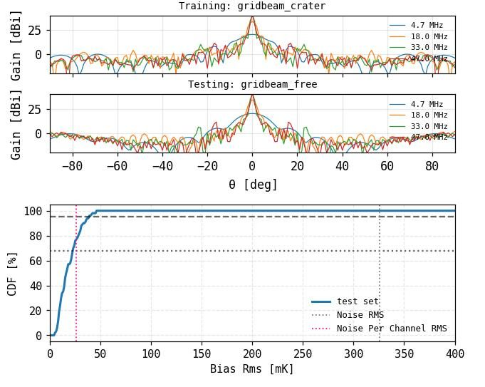

Visiting Student Researcher in the Robotics Group at JPL, working on the Lunar Crater Radio Telescope — a 350m diameter telescope to be placed in a crater on the moon. The goal of this telescope is to measure the Dark Ages signal - an as yet unmeasured signal from the Universe's infancy.
Built the signal processing pipeline, an orbital simulations toolkit, and an antenna/foreground convolved signal extraction pipeline using machine learning and analytical methods such as convolved singular value decomposition. The main challenge is separating the signal we indend to measure, which has a strength of 10^-3 Kelvin, from the noisy foreground such as galaxies, which can have a strenght of up to 10^5 Kelvin. This discrepancy in orders of magnitude discrepancy is like trying to find one specific sand grain on the beach, with the wind blowing.
Link

Signal extraction compared across telescope configurations